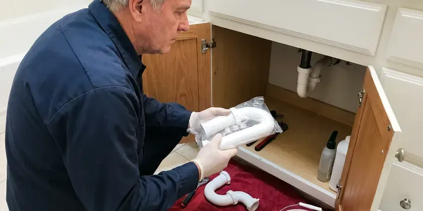

Toilet Installation in Essex Junction, VT
Thinking about a new toilet for your Essex Junction, VT home? We handle all types of toilet installation, from standard models to water-saving units.
- Fast Scheduling for Installs
- New Flange and Seal Included
- Licensed, Insured Plumbers
- Licensed & Insured

Ready for Your New Toilet in Essex Junction, VT?
Call today to book an install time that fits your schedule, whether you supply the toilet or we do.
Expert Toilet Installation Services in Essex Junction, VT
CKV Plumbing specializes in complete toilet installation services across Essex Junction, VT. Whether you're upgrading an old model, replacing a broken unit, or installing a new fixture in a bathroom renovation, our licensed plumbers ensure a precise and leak-free setup.
Our expertise includes:
- Bidet seat wiring coordination and smart toilet hookups
- Remove and dispose of old toilets carefully and cleanly.
- Ensure proper flange and seal for leak-proof connections.

Additional Bathroom Plumbing Services in Essex Junction, VT
From toilets to showers, our bathroom plumbing team in Essex Junction, VT handles repairs, installs, and upgrades with tidy, code-compliant work.


Customers
Why Choose CKV Plumbing for Toilet Installation in Essex Junction, VT?
A faulty toilet installation can lead to expensive water damage and headaches down the road. We focus on durable, code-compliant work for your peace of mind.
- Code Compliance, We make sure all toilet installations meet Essex Junction and Vermont plumbing codes, including proper venting and drainage requirements.
- Right Tools, Using specialized tools, we ensure a tight, secure fit for all toilet components, preventing future leaks.
- Clean Work, We always protect your home during installation and leave the work area spotless when finished.
Citywide Coverage
CKV Plumbing serves every neighborhood in Essex Junction, providing reliable toilet installation services wherever you are. From older districts to the newest developments, our plumbers are familiar with the varied housing types and plumbing setups across the area.
Experienced Team
The CKV Plumbing team consists of licensed and experienced plumbers dedicated to precision in every toilet installation. We understand the details of various toilet types and bathroom layouts, delivering expert service for your home.
Safety-First Approach
We anchor flanges properly to slab or subfloor and use corrosion-resistant bolts. When a bidet seat needs power, we make sure a GFCI-protected outlet is in place or coordinate with your electrician.
Trusted Certified Essex Junction Plumbing Services Professionals
At CKV Plumbing, we take pride in providing licensed, certified plumbing services throughout Essex Junction, VT. Backed by recognized industry credentials, our experienced plumbers combine technical skill with genuine customer care. Whether it is repair, installation, or maintenance, we follow strict safety and quality standards to deliver long-lasting results you can trust.
Call Us Now PHCC Plumbing Contractor Recognition
PHCC Plumbing Contractor Recognition Better Business Bureau (BBB) Accreditation
Better Business Bureau (BBB) Accreditation Angi Certified Pro
Angi Certified Pro ISO 9001 Quality Management Certification
ISO 9001 Quality Management CertificationReliable Toilet Installation Services in Essex Junction, VT
Customer-Supplied Toilet Installation in Essex Junction, VT
If you already bought a toilet from a home center, we can install it for a flat labor rate. Before we arrive, we recommend checking that the rough-in on the box matches your bathroom. We inspect the fixture for shipping cracks before setting it, since damaged porcelain should go back to the store. We bring the seal, bolts and supply line so you do not have to.

Standard Toilet Installation in Essex Junction
Whether you're replacing an old, inefficient toilet or installing a new one during a bathroom remodel, our team handles standard toilet installations with care. We make sure of proper flange seating, secure bolting to the floor, and leak-free water supply connections. Our process includes removing and disposing of your old toilet responsibly, making the upgrade hassle-free for your Essex Junction home.
Toilet Flange and Wax Ring Replacement in Essex Junction, VT
A key part of any toilet installation is ensuring a proper seal between the toilet and the waste pipe, typically achieved with a wax ring and a secure flange. We carefully replace worn or damaged flanges and install new wax rings during every toilet installation. This prevents leaks and sewer gas from entering your Essex Junction, VT home, a common issue with older or poorly installed units.
New Construction Toilet Installation in Essex Junction
In new homes and additions, we set toilets after the finished floor is in so the flange sits at the right height. We verify the drain is correctly vented and the rough-in matches the fixture you selected. Each toilet gets a new wax or wax-free seal, a stainless supply line and a quarter-turn angle stop. We flush-test and check for leaks before final inspection.
Commercial Toilet Installation in Essex Junction, VT
Beyond residential services, CKV Plumbing provides dependable commercial toilet installation for businesses, offices, and public facilities in Essex Junction, VT. We understand the need for durable, high-traffic solutions, including flushometer-style toilets and commercial-grade fixtures. Our installations focus on longevity and compliance with commercial building codes and ADA requirements.
Rough-In Toilet Installation in Essex Junction, VT
Installing a toilet in a new bathroom or during a complete renovation often involves 'rough-in' work, which includes setting the waste pipe and water supply lines. Our plumbers are skilled in establishing the correct rough-in dimensions for various toilet types, ensuring future compatibility and proper function. We handle all aspects of the initial plumbing setup for your new toilet in Essex Junction, VT.
Toilet Replacement & Upgrades in Essex Junction, VT
Upgrading an old, inefficient toilet can greatly improve bathroom looks and water conservation. We handle the complete process of removing your old toilet, disposing of it responsibly, and installing your new, chosen model. Whether you're switching to a dual-flush, low-flow, or a different style, we make sure the transition is smooth and your new toilet fits cleanly into your Essex Junction bathroom.

Low-Flow WaterSense Toilet Installation in Essex Junction, VT
Modern WaterSense toilets use 1.28 gallons per flush or less, and dual-flush models offer an even lighter option for liquid waste. Swapping an old 3.5 gallon toilet makes a noticeable difference on your water bill. Some local water providers have offered rebates for high-efficiency toilets, so it is worth checking with yours. We help you choose a model with a high MaP flush rating.
Toilet Installation Near Me in Essex Junction, VT
When you search for 'toilet installation near me' in Essex Junction, VT, CKV Plumbing is your trusted local expert. We prioritize prompt service and quality workmanship for every home and business in the area. Our convenient scheduling and responsive team make it easy to get your new toilet installed without delay.
Looking for toilet installation near me often means you have a project timeline to keep. CKV Plumbing schedules installs around your contractor and your calendar. We bring every part needed to finish in one trip.
CKV Plumbing at a Glance
- Fully licensed plumbing team covering Essex Junction, VT
- 24/7 emergency service with same-day scheduling
- Clear written estimates, no hidden fees
- 4.8-star rated by 553+ Vermont customers
Essex Junction Map
Essex Junction Information
- Population
- 10,817
- Area codes
- Local
- Service area
- Essex Junction and communities within 40 miles
- Nearby
- Winooski, South Burlington, Burlington, Shelburne
Proper toilet installation is essential in Essex Junction, VT homes, as a faulty seal or connection can lead to significant water damage that is costly to repair. Vermont has some of the oldest housing in the country, including farmhouses and village homes built well over a century ago.
Expert Services
Trust our professionals for reliable CKV Plumbing solutions in Essex Junction, VT.
Our Specialized Plumbing Services in Essex Junction, VT
At CKV Plumbing, we provide a complete range of plumbing services across Essex Junction, VT. From leak detection to full system installations, our team ensures fast, precise, and affordable service for both residential and commercial properties. Explore our core services below:


How Our Toilet Installation Process Works in Essex Junction, VT
We follow a consistent, step-by-step process to deliver a proper toilet installation every time in your Essex Junction, VT home.
Request a Quote
Call (802) 209-5139 and tell us about your project and the toilet you want. We give you a flat price for installation, with or without the fixture.
Measure and Prep
We confirm rough-in distance, flange height and shutoff condition. If the flange or drain needs work, we handle it before the toilet goes in.
Install and Test
We set the toilet level on a new seal, connect a new supply line and caulk the base. Several test flushes confirm a leak-free install.
Frequently Asked Questions About Toilet Installation in Essex Junction
The cost of toilet installation in Essex Junction, VT usually ranges from $200 to $500, not including the toilet fixture itself. This price can vary based on factors like the type of toilet, any necessary plumbing modifications, or the difficulty of removing an old unit.
For most adults, yes. The taller seat makes sitting and standing less of a strain, especially for seniors or anyone with joint issues. Shorter users and young children may prefer a standard-height bowl.
We are skilled at installing all major toilet brands, including Kohler, American Standard, Toto, Delta, Gerber, and many others. Our plumbers are familiar with the specific requirements for each manufacturer to ensure a proper and efficient installation.
When choosing a new toilet, consider factors like bowl shape (round vs. elongated), height (standard vs. ADA-compliant), flushing system (gravity-fed vs. pressure-assisted), water efficiency (gallons per flush), and overall style to match your bathroom. We can help you navigate these choices.
Toilets carry manufacturer warranties, often 1 to 5 years on parts and longer on porcelain. We also guarantee our installation workmanship and will come back to fix any leak caused by the install.
Yes. On a slab foundation, moving a toilet means cutting the concrete, rerouting the drain and vent and patching the floor. It is a bigger job, but we handle it often during remodels.
A large share of Vermont homes rely on private wells, and well water here can range from soft to moderately hard depending on the bedrock. Hard water can lead to mineral buildup in toilet tanks and bowls over time, affecting performance and requiring more frequent cleaning. While it doesn't directly impact installation, choosing a toilet with a good glaze and strong flush can help limit these effects.
CKV Plumbing installs all major toilet brands, including Kohler, Toto, American Standard, Delta, and Gerber. We can help you choose a model that fits your budget, style preferences, and water efficiency goals.
What People Are Saying About Our Plumbing Experts?

Emily R.
I called CKV Plumbing for plumbing repair, and the technician was fast, polite, and thorough. They explained the problem clearly and fixed it the same day. I will definitely hire them again. Highly recommended!
Plumbing Repair · Burlington, VT
James P.
Our commercial plumbing system had a leak under the sink, and CKV Plumbing handled it professionally. The plumbers arrived quickly and restored everything without disruption to our customers.
Commercial Plumbing · Burlington, VT
Daniel K.
A pipe burst at 11 pm and they actually answered. The plumber showed up within the hour, shut everything down, and had us back to normal the next morning. Could not ask for more.
Emergency Plumbing · St. Albans, VT
Laura S.
I scheduled a water heater replacement, and the team made the process smooth and affordable. The new unit works perfectly, and they cleaned up after completing the job.
Water Heater Replacement · Shelburne, VTRobert G.
The trenchless sewer replacement saved our front yard. They walked us through the camera inspection footage first so we knew exactly what we were paying for.
Sewer Line Replacement · St. Albans, VT
Mark T.
When our office needed drain cleaning, CKV Plumbing provided quick, reliable service. The plumber arrived on time and made sure every drain flowed perfectly before leaving. Very satisfied.
Drain Cleaning · St. Albans, VT